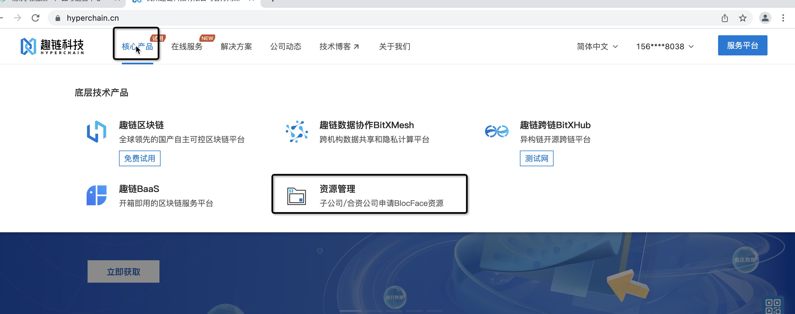
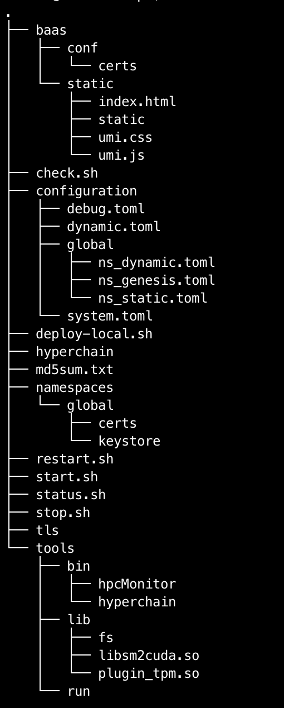
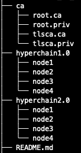
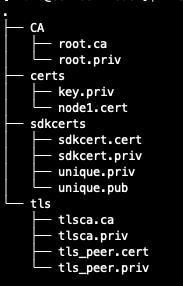
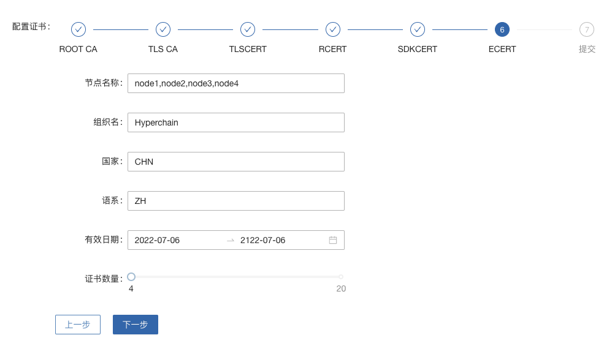
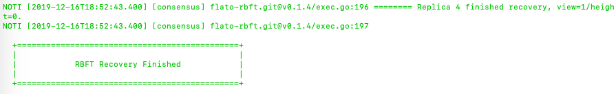

部署文档¶
前言¶
该文档将介绍如何部署一个拥有4个节点的Hyperchain集群，用户需要 分别登录到4台服务器 上进行操作。
这里假设4台服务器的IP分别为 node1 、 node2 、 node3 和 node4 ，操作用户都是 hyperchain 。
该部署文档是为模拟平台上线部署的场景而编写的，所有的部署操作都只有普通用户权限。不推荐使用root用户部署平台，容易养成不好的操作习惯，也不利于发现操作步骤中的错误。
第一章 获取安装包以及用户登录¶
1.1 获取安装包¶
如果您已通过其他方式获取安装包请忽略此步骤。
【线下获取】对接趣链科技相关人员
【公司外部】登录服务平台官方资源库下载
没有开放权限的，可以找@王炎炎申请支持

【公司内部】登录OA：https://moffi.hyperchain.cn
点击签发->平台组件->组件列表->hyperchain->下载，选择使用您平台的hyperchain版本下载
点击签发->证书->创建证书，选择V1.7+证书体系，按步骤点击后下载得到证书zip文件
点击签发->许可->我的许可，申请适合您需求的LICENSE，审批通过后在许可状态中下载LICENSE文件
【免费试用版】https://docs.hyperchain.cn/document/detail?type=1&id=55
至此，您已经获得了所有需要的安装包，注意： 证书和LICENSE文件将在hyperchain部署完成时用到，详见3.2节。
1.2 创建使用用户及文件权限¶
创建平台部署所需的用户，例如创建如下用户:
用户名：hyperchain
密码：hyperchain
可用如下命令创建新用户:
sudo useradd -m -d /home/hyperchain -s /bin/bash -k /etc/skel hyperchain
sudo passwd hyperchain
修改部署路径及数据存放路径的目录权限，例如 /data/hyperchain
sudo chown -R hyperchain:hyperchain /data/hyperchain
1.3 上传安装包¶
登录服务器前需要上传hyperchain安装包和另外的小工具。
以服务器地址 node1 ，用户名 hyperchain 为例，操作步骤如下:
#上传hyperchain安装包
#具体操作时将hyperchain-install.tar.gz换成实际安装包名，将node1换成实际服务器IP地址
scp hyperchain-installer.tar.gz hyperchain@node1:~
#上传nt工具包（可选）
#具体操作时将node1换成实际服务器IP地址
scp nt-linux64.tar.gz hyperchain@node1:~
1.4 登录操作用户¶
#具体操作时将node1换成服务器IP地址 ssh hyperchain@node1 Password: #输入登录密码
1.5 重复操作¶
请按照1.2~1.3中的步骤，再分别登录到 node2~node4 上，以继续之后的操作。
第二章 检查系统环境¶
首先以 node1 服务器为例，完成以下的检查步骤。
2.2 检查服务器配置¶
检查服务器配置是否与预期的配置一致，如果不一致请联系系统管理调整配置。
#查看CPU主频 cat /proc/cpuinfo | grep 'model name' | uniq #查看CPU核数 cat /proc/cpuinfo | grep 'model name' | wc -l #查看内存大小 #如果free -h执行失败，可以直接调用free查看 free -h #查看挂载的文件系统大小 df -h
2.3 检查端口占用情况¶
检查Hyperchain节点所需的端口是否被其他进程占用，如已被占用请联络系统管理员进行调整或将各节点dynamic.toml 中jsonrpc、grpc的端口改为其他端口即可(详见4.3)
检查端口是否被监听，以查看8001端口为例：
#查看端口是否被占用的命令 unetstat -nap | grep 8001
如果存在被占用的情况，上述命令会打印出以下类似信息:
(Not all processes could be identified, non-owned process info
will not be shown, you would have to be root to see it all.)
tcp6 0 0 :::8001 :::* LISTEN 30207/./process1
2.4 检查网络连通性¶
检查网络连通性的目的，就是为了检查Hyperchain节点所监听的端口能否被其他节点访问到，如果其他节点访问不到请联络系统管理做处理。
可以使用以下三种方法检查网络连通性， 选择任意一种即可 。
nt工具
nc命令
Python HTTP模块
2.4.1 使用nt工具测试连通性¶
nt是一个专门用于测试网络连通性的工具。
假设Hyperchain节点IP地址node1~node4，需要验证node2~node4与node1上8001端口的连通性，使用方法如下:
#登录node1
#具体操作时将node1换成服务器IP地址
ssh hyperchain@node1
#解压nt工具包
tar xvf nt-linux64.tar.gz
cd nt-linux64
#启动nt监听
./nt server -l 0.0.0.0:8001
#登录node2
#具体操作时将node2换成服务器IP地址
ssh hyperchain@node2
#解压nt工具包
tar xvf nt-linux64.tar.gz
#编辑servers.txt，向servers.txt中加入需要检测的IP:Port，本例中填入一下内容
#具体操作时将node1换成服务器IP地址
echo 'node1:8001' > servers.txt
#检查servers.txt内容是否符合预期
cat servers.txt
#启动客户端测试
./nt client
#看到类似如下带SUCCESS字样的输出，即表明测试成功
[CLIENT] TEST node1:8001 [SUCCESS] RESP: s: server_resp [0.0.0.0:8001], C->S: 0 ms, RTT: 0 ms
#在node3、node4上重复在node2上操作即可
#测试完之后返回到node1
#按 CTRL-C 结束server监听
CTRL-C
nt工具支持同时检查多个IP:Port的连通性，只要在servers.txt中以每行一个IP:Port的格式填写即可。
2.4.2 使用nc命令测试连通性¶
还可以用nc命令测试连通性，此方法的优点是操作步骤简单，但缺点是有些系统不会自带安装nc命令。
#安装nc命令如下： sudo yum install -y nc
假设Hyperchain节点IP地址node1~node4，需要验证node2~node4与node1上8001端口的连通性，使用方法如下:
#登录node1
#具体操作时将node1换成服务器IP地址
ssh hyperchain@node1
#启动nc监听, -l设置开启监听模式，-k开启支持多客户端同时连接模式，-p指定监听端口
nc -l -k -p 8001
#登录node2
#具体操作时将node2换成服务器IP地址
ssh hyperchain@node2
#使用nc命令测试连通性，-w选项设置3秒等待时间,-i选项设置连接成功后空闲等待时间(空闲超3秒即退出)
#具体操作时将node1换成服务器IP地址
nc -w 3 -i 3 -v node1 8001
#如果出现以下带Connected字样的输出，表示测试成功。
Ncat: Connected to node1:8001.
Ncat: Idle timeout expired (3000 ms).
#在node3、node4上重复在node2上操作即可
#测试完之后返回到node1
#按 CTRL-C 结束nc监听
CTRL-C
2.4.3 使用Python的HTTP模块测试连通性¶
使用Python自带的HTTP模块也能快速开启对一个端口的监听，如果在使用上述两种方法时遇到问题，可以考虑使用此方法快速测试网络连通性。
假设Hyperchain节点IP地址node1~node4，需要验证node2~node4与node1上8001端口的连通性，使用方法如下:
#登录node1
#具体操作时将node1换成服务器IP地址
ssh hyperchain@node1
#启动Python HTTP模块监听，命令如下(注意大小写)
python -m SimpleHTTPServer 8001
#登录node2
#具体操作时将node2换成服务器IP地址
ssh hyperchain@node2
#使用curl命令测试连通性
#具体操作时将node1换成服务器IP地址
curl node1:8001 >& /dev/null && echo yes || echo no
#如果测试成功就打印yes，否则打印no
#在node3、node4上重复在node2上操作即可
#测试完之后返回到node1
#按 CTRL-C 结束Python监听
CTRL-C
2.5 检查系统字符集¶
hyperchain 节点默认使用的字符集为 UTF-8 ，请检查 SDK 或者应用服务器的默认字符集是否为 UTF-8 ，如果不是，有可能造成签名非法。
1、首先使用locale命令看看当前系统所使用的字符集，如下可以看到是en英文
[root@dev ~]# locale LANG=en_US.UTF-8 LC_CTYPE="en_US.UTF-8" LC_NUMERIC="en_US.UTF-8" LC_TIME="en_US.UTF-8" LC_COLLATE="en_US.UTF-8" LC_MONETARY="en_US.UTF-8" LC_MESSAGES="en_US.UTF-8" LC_PAPER="en_US.UTF-8" LC_NAME="en_US.UTF-8" LC_ADDRESS="en_US.UTF-8" LC_TELEPHONE="en_US.UTF-8" LC_MEASUREMENT="en_US.UTF-8" LC_IDENTIFICATION="en_US.UTF-8" LC_ALL=
**2、如上面的命令输出非utf-8字符集则按如下方法修改配置文件并重启系统测试**（在CentOS6里面该文件是/etc/sysconfig/i18n）
vim /etc/locale.conf LANG="en_US.UTF-8"
2.6 检查最大文件句柄数¶
启动hyperchain之前，需要保证文件句柄数至少为65535，否则有可能会由于文件句柄数不足引发系统宕机。
> ulimit -n 65535
查询到的数值应至少为65535，否则，建议联系当前服务器的管理员进行修改（如有管理员权限则可以使用以下命令修改）:
#临时修改
ulimit -HSn 65535
#永久修改
cat << EOF >> /etc/security/limits.conf
* soft nofile 65535 # open files (-n)
* hard nofile 65535
* soft nproc 65565
* hard nproc 65565 # max user processes (-u)
EOF
查询到的数值应至少为65535，否则，建议联系当前服务器的管理员进行修改。
2.7 重复操作¶
在完成以上步骤后， node1 服务器的系统环境就检查完毕了。请按照 2.1~2.5 中的步骤，再分别登录到 node2~node4 上做一次检查。
第三章 安装节点¶
首先以node1服务器为例，完成以下的安装步骤。
3.1 备份数据¶
在做安装操作之前，需要先检查目标目录是否有数据，如果不是首次安装，请先备份一下历史数据。
3.2 安装节点¶
以下步骤以安装node1上的Hyperchain为例
首先解压安装包
#回到用户主目录，解压安装包 cd #根据实际情况修改hyperchain-install.tar.gz tar xvf hyperchain-installer.tar.gz #根据实际情况修改hyperchain-abcdef cd hyperchain-abcdef
假设目标安装目录是 /data/hyperchain , 请先对照操作步骤 2.2 中的文件系统检查结果，再次确认目标目录的大小满足需求。
df -h
注意，在安装之前，一定要确认好目标目录的大小，这点经常会被忽略。请务必仔细检查，以避免不必要的麻烦。
倘若检查结果没有问题，请执行以下命令完成安装：
./deploy-local.sh -d /data/hyperchain #如果想直接安装到当前目录，执行以下命令； #./deploy-local.sh -d ./
注意：确保操作用户对-d指定的安装目录具有可写权限，否则安装将会出错。
部署完成可看到如下信息:
hyperchain has been successfully installed in: /data/hyperchain
Please run these commands to start hyperchain process:
cd /data/hyperchain
./start.sh
然后把之前申请的证书和license文件从本地机器复制到该节点的安装目录下（需要先退出用户登录在本地终端执行该命令，执行完毕后再登录）:
#在本地解压证书文件
#根据具体情况替换证书文件名字
unzip 2019-10-31_06_43_59_allcerts.zip
解压后的2019-10-31_06_43_59_allcerts文件夹里包含了一个README文件，请先仔细阅读该文件，并按照文件内容进行操作。
#上传LICENSE文件 #根据具体情况替换LICENSE文件的名字 scp license.zip hyperchain@node1:/data/hyperchain #解压license文件 unzip xvf license.zip #解压出的license文件名可能不是LICENSE，需要重命名 #根据实际情况替换LICENSE_20191031文件的名字 mv LICENSE_20191031 LICENSE
最后，再执行以下命令，完成Hyperchain节点的安装:
source ~/.bashrc
3.3 验证安装是否成功¶
在执行完步骤3.2后，需要验证一下节点是否已经正确安装。请执行以下命令做测试:
#/data/hyperchain为Hyperchain的目标安装目录，可根据实际情况做修改
cd /data/hyperchain/
./hyperchain --version
假如显示正确的版本信息，说明节点安装成功，示例如下:
$ ./hyperchain --version
Hyperchain Commercial Version: v2.12.0
如果出现了以下报错信息，说明openssl的动态链接库没有安装成功
error while loading shared libraries: libxxx. so: cannot open shared object file: No such file or directory
需要向用户目录下的 .bashrc 文件添加一行:
#添加一个环境变量LD_LIBRARY_PATH，根据实际情况修改/data/hyperchain路径
echo 'export LD_LIBRARY_PATH=/data/hyperchain/tools/lib/' >> ~/.bashrc
#导出环境变量
source ~/.bashrc
在完成以上操作之后，再执行一次 ./hyperchain –version ，应该就可以输出正常的版本信息了。
至此，node1服务器上的Hyperchain节点就算完成了。
第四章 检查、修改配置文件¶
安装包中的配置文件只包含了最精简化的配置， 安装包中的配置文件已经足够满足hyperchain的正常使用 。若您是第一次使用hyperchain，且希望更深入地使用hyperchain时，可以查阅相关功能的使用手册从而知晓配置文件的修改方法；若您以前已经部署过hyperchain的历史版本，那么仍可以沿用原先的全量配置文件，只不过需要参考《配置变更》对一些配置上的变化进行确认。
注意，以下操作都是在Hyperchain的目标安装目录操作的，不是在原先未安装前的目录下操作。本例中，是在/data/hyperchain路径下检查、修改配置文件。
安装包中的文件内容包括：

4.1 检查LICENSE文件¶
由于LINCESE文件和Hyperchain安装包不是一起打包分发的，所以在启动节点前，需要检查一下LICENSE文件是否已经更新到正确版本。
LICENSE文件位于Hyperchain节点的根录下，文件名即LICENSE，如果不确定是否是最新版本，可以用原始的LICENSE文件再覆盖一遍。
#解压缩 cd ~ unzip 07668027-61cc-4cf0-950b-0f8a59eaf7b6.zip #解压出来后，LICENSE文件夹的名字可能是20220802@.LICENSE #更新所有节点的LICENSE #拷贝命令的目标文件名，必须是LICENSE，没有后缀 cp 20220802@.LICENSE /data/hyperchain/LICENSE
请依次检查4个节点的LICENSE文件。
4.2 vi编辑器使用方法¶
下面的配置文件的编辑需要使用到vi文本编辑器，在此介绍vi的使用方法
1、使用vi命令加文件名对某个文件进行编辑，进入vi编辑文件的界面
vi anyFile.txtna
2、按下i键进入编辑模式，方向键控制光标移动
3、编辑完成后，按下Esc键进入命令模式，输入:wq保存修改并退出vi
:wq
4、若要放弃本次编辑，按下Esc键进入命令模式,输入:q!放弃修改并退出vi
:q!
4.3 修改配置文件¶
4.3.1 dynamic.toml¶
编辑 dynamic.toml
vi configuration/dynamic.toml
其内容如下:
self = "node1"
[port]
jsonrpc = 8081
grpcApi = 11001 #rpc
grpc = 50011 # p2p
baas = 12001
[p2p]
[p2p.ip.self]
# domain 用于指定本地节点目前处在的网络域名称，比如本地节点目前
# 所处的域名称为“domain1”
domain = "domain1"
# addrs 用于指定本地节点网络可互通的网络域有哪些，并且指定了这些域
# 下的节点应该使用哪个 IP 地址来连自己（即本地节点），这个 IP 地址可能为本地
# 节点的 IP 地址，也可能是代理设备的地址
addrs = [
"domain1 127.0.0.1:50011",
"domain2 127.0.0.1:50011",
"domain3 127.0.0.1:50011",
"domain4 127.0.0.1:50011",
]
[[namespace]]
name = "global"
start = true
修改port配置
内容为:
[port]
jsonrpc = 8081
grpcApi = 11001
grpc = 50011
baas = 12001
因为我们选择4服务器4节点模式，每个节点可以使用默认的port配置，但是为了介绍如何正确修改节点配置，这里还是区别一下各节点的端口，即1~4号节点分别使用为 xxxx1~xxxx4 号端口
以2号节点为例，它的port内容如下:
[port]
jsonrpc = 8082
grpcApi = 11002
grpc = 50012
baas = 12002
需要注意的是，在默认配置中除了1号节点不需要修改port配置，其他节点都要修改port配置。请依次配置剩余节点的port配置。
修改域配置
以下是详细的配置说明:
[p2p.ip.self]
# 本节点所在域名的域名
domain = "domain1"
# 本节点在不同的域中的地址
# 举例来说，如果节点2属于域`domain2`，那么节点2访问节点1时需要用节点1声明的在`domain2`域中对外暴露的地址，换句话说，节点2访问本节点时用的地址是`127.0.0.1:50012`。
addrs = [
"domain1 127.0.0.1:50012",
"domain2 127.0.0.1:50012",
"domain3 127.0.0.1:50012",
"domain4 127.0.0.1:50012",
]
这里是配置是比较容易出错的地方，最简单的配置方式就是：
所有节点都只使用一个domain1：所有节点都在同一个内网环境，只要配置一个domain和该节点在这个domain里的IP地址
请按照上述内容格式，依次更新剩余节点的域配置。
更复杂的网络环境下：
在一些加入了类似Nginx代理的网络中，这个文件的配置极其容易出错，一般可以这样理解，服务器node1在domain1中有自己的 node1_domain1_ip ；但是在domain2中它的 node1_domain2_ip ，是它在domain2中 最内层的一个Nginx代理上，所分配的服务器node1转发地址 ，domain2中其他的服务器node2、node3是通过连接最内层的Nginx上的 node1_domain2_ip 访问处于外部的node1服务器的。所以domain2中最内层Nginx上的 node1_domain2_ip ，就是node1服务器dymanic.toml中，该填的 domain2 node1_domain2_ip 地址。
4.3.2 ns_dynamic.toml¶
编辑 ns_dynamic.toml
vi configuration/global/ns_dynamic.toml
其内容如下:
[consensus]
algo = "RBFT"
[self]
n = 4 # 运行时修改。表示所连vp节点的个数，该值在网络中有节点加入或退出时会实时变化。
hostname = "node1" # 本地节点的hostname
new = false # 运行时修改。新节点成功加入网络以后，该值会从true变为false。
[[nodes]]
hostname = "node1"
[[nodes]]
hostname = "node2"
[[nodes]]
hostname = "node3"
[[nodes]]
hostname = "node4"
trustNodes = false #运行时修改。节点成功加入共识以后，该值会变为false。当需要信任配置当nodes列表时，将此值配为true
[p2p]
[p2p.ip.remote]
# hosts 用于指定本地节点启动后要向哪些节点发起连接，并且指定了通往
# 这些节点的可连通地址，这个地址可能是对端节点的 IP 地址，也可能是
# 代理设备的地址。
# 如果该列表里指定了本地节点自己的hostname和地址，则自动忽略该项。
hosts = [
"node1 127.0.0.1:50011",
"node2 127.0.0.1:50012",
"node3 127.0.0.1:50013",
"node4 127.0.0.1:50014",
]
其中需要注意 [[nodes]] 配置，本次部署时部署多少个VP节点，就加入多少个 [[nodes]] 部分:
[[nodes]]
hostname = "node4"
上面的 hostname 必须要与 dynamic.toml 文件中的self 配置中保持一致；
在 self 部分需要注意的几个配置项以及配置解释:
[self]
n = 4 # 运行时修改。表示所连vp节点的个数，该值在有节点新增或退出时实时变化。
hostname = "node1"
new = false # 运行时修改。新节点成功加入网络以后，该值会从true变为false。
修改host配置
内容为:
[p2p.ip.remote]
hosts = [
"node1 127.0.0.1:50011",
"node2 127.0.0.1:50012",
"node3 127.0.0.1:50013",
"node4 127.0.0.1:50014",
]
配置规则很简单： hostname ip_address:port 将所有的节点的节点名称和IP地址端口配置好即可（port为节点间通讯的端口）。
修改方法为：
将每行的 127.0.0.1 替换为4台服务器各自的IP地址
将每行的 5001x 端口换成每个Hyperchain节点自己的grpc端口
因为我们选择单服务器单节点模式，实际上每个节点可以使用默认的50011端口，但是为了介绍如何正确修改节点配置，这里还是将grpc端口定为 50011~50014
以服务器IP 10.10.10.1~10.10.10.4 为例，将hosts.toml文件修改为类似以下的内容:
hosts = [
"node1 10.10.10.1:50011",
"node2 10.10.10.2:50012",
"node3 10.10.10.3:50013",
"node4 10.10.10.4:50014"]
需要注意的是，在同一个网络域中，4个节点的hosts配置都是一致的，请依次配置。
需要注意的是，本例中除了1号节点不需要修改ns_dynamic.toml，其他节点都要修改配置。请依次配置剩余节点的ns_dynamic.toml文件。
4.3.3 跨域网络¶
跨域网络相关内容请查阅 《跨域网络使用手册》
4.4 修改配置文件ns_genesis.toml¶
4.4.1 [genesis]模块说明：¶
[genesis] 配置的是ca证书信息
ca_mode ca模式，配置后不支持修改。支持的ca模式有：中心化ca，即Center，也叫非分布式ca；分布式ca，即Distributed；无ca，即none。
root_ca 当ca模式为中心化ca，即Center时，需要配置中心化ca使用的rootca，即root.cert的内容，其他模式下无需配置。
[genesis] #以下仅为格式范例，直接使用会导致节点启动失败 ca_mode = "Center" root_ca = ["""-----BEGIN CERTIFICATE----- MIICODCCAeSgAwIBAgIBATAKBggqhkjOPQQDAjB0MQkwBwYDVQQIEwAxCTAHBgNV BAcTADEJMAcGA1UECRMAMQkwBwYDVQQREwAxDjAMBgNVBAoTBWZsYXRvMQkwBwYD VQQqEwVlY2VydDBWMBAGByqGSM49AgEGBSuBBAAKA0IABDoBjgQsvY4xhyIy3aWh 4HLOTTY6te1VbmZaH5EZnKzqjU1f436bVsfi9HLE3/MCeZD6ISe1U5giM5NuwF6T ZEOjaDBmMA4GA1UdDwEB/wQEAwIChDAmBgNVHSUEHzAdBggrBgEFBQcDAgYIKwYB BQUHAwEGAioDBgOBCwEwDwYDVR0TAQH/BAUwAwEB/zANBgNVHQ4EBgQEAQIDBDAM VQQLEwAxDjAMBgNVBAMTBW5vZGUxMQswCQYDVQQGEwJaSDEOMAwGA1UEKhMFZWNl cnQwIBcNMjAwNTIxMDQyNTQ0WhgPMjEyMDA0MjcwNTI1NDRaMHQxCTAHBgNVBAgT ADEJMAcGA1UEBxMAMQkwBwYDVQQJEwAxCTAHBgNVBBETADEOMAwGA1UEChMFZmxh dG8xCTAHBgNVBAsTADEOMAwGA1UEAxMFbm9kZTExCzAJBgNVBAYTAlpIMQ4wDAYD BgMqVgEEBWVjZXJ0MAoGCCqGSM49BAMCA0IAuVuDqguvjPPveimWruESBYqMJ1qq ryhXiMhlYwzH1FgUz0TcayuY+4KebRhFhb14ZDXBBPXcn9CYdtbbSxXTogE= -----END CERTIFICATE----- """]
4.4.2 [genesis.alloc] 模块说明：¶
在ns_genesis.toml文件中需要配置创世账户以及创世节点，里面没有默认配置，可自行安装当前链的实际情况进行配置。
[genesis.alloc] 配置的是创世账户的 address ，这些账户及其对应的余额会在区块链启动时被创建
链启动时，会将带ns_genesis.toml配置文件中，有余额的账户初始化为链级管理员和合约管理员；链启动后（初始化完成后），只能通过提案管理链级角色，为其他账户授权或回收角色，其他账户有了余额也不会再被初始化为具有角色的账户
示例如下，要注意的是，以下例子中的账户，它们的私钥并不会对外暴露，因此请您自行创建创世账户，配置相应的address，并妥善保管账户私钥（账户可通过sdk生成）
[genesis.alloc] # 若需要配置多个账户，按以下格式新增即可，数量至少一个 "0x856e2b9a5fa82fd1b031d1ff6863864dbac7995d" = "1000000000" "0xb18c8575e3284e79b92100025a31378feb8100d6" = "1000000000" "XXXXXXXXXXXXXXXXXXXXXXXXXXXXXXXXXXXXXXXXXX" = "1000000000" "XXXXXXXXXXXXXXXXXXXXXXXXXXXXXXXXXXXXXX" = "1000000000"
litesdk 创建账户举例说明
Account account = accountService.genAccount(Algo.SMRAW); #更多加密方式详见litesdk使用手册
gosdk 创建账户举例说明
ac, err := account.NewAccountJson(account.ECDES, "123") #更多加密方式详见gosdk使用手册
4.4.3 [[genesis.nodes]] 模块说明：¶
[[genesis.nodes]] 配置的是创世节点相关的信息
genesisNode 是创世节点的名称（hostname），
certContent 是此节点的证书信息，可以是本节点的cert证书，也可以是其他节点颁发给本节点的证书(如果是通过OA申请的证书,会是hyperchain2.0目录下对应节点的certs/node$i.cert的内容)
有多少个创世节点就加多少个对应的 [[genesis.nodes]] 配置
注：需要确保每个节点启动时，ns_genesis.toml配置相同。
示例如下：
[genesis]
ca_mode = "Center" # ca模式，配置后不支持修改。支持的ca模式有：中心化ca，即Center；分布式ca，即Distributed；无ca，即none
root_ca = ["""-----BEGIN CERTIFICATE-----
XXXXX
XXXXX
XXXXX
-----END CERTIFICATE-----
"""] # 当ca模式问中心化ca，即Center时，需要配置中心化ca使用的root ca，其他模式下无需配置
[genesis.alloc] # 创世账户，用户需用自己生成的账户地址替换创世账户地址，后续妥善保管这些账户的私钥
"0x856e2b9a5fa82fd1b031d1ff6863864dbac7995d" = "1000000000"
"0xb18c8575e3284e79b92100025a31378feb8100d6" = "1000000000"
[[genesis.nodes]] # 创世节点列表
genesisNode = "node1" # 创世节点名称，与hostname对应
certContent = """-----BEGIN CERTIFICATE----- #注意。此处必须有3个"
XXXXX
XXXXX
XXXXX
-----END CERTIFICATE-----""" # 创世节点证书，即此节点的ecert，注意。此处必须有3个"
[[genesis.nodes]]
genesisNode = "node2"
certContent = """-----BEGIN CERTIFICATE-----
XXXXX
XXXXX
XXXXX
-----END CERTIFICATE-----"""
[[genesis.nodes]]
genesisNode = "node3"
certContent = """-----BEGIN CERTIFICATE-----
XXXXX
XXXXX
XXXXX
-----END CERTIFICATE-----"""
[[genesis.nodes]]
genesisNode = "node4"
certContent = """-----BEGIN CERTIFICATE-----
XXXXX
XXXXX
XXXXX
-----END CERTIFICATE-----"""
也可以使用以下脚本助你生成 ns_genesis.toml配置文件
将脚本和oa上下载的证书压缩包（allcerts.zip结尾的压缩包）放在同一个目录下，依次执行以下命令，脚本会生成一份完整的 **ns_genesis.toml*
sudo yum insstall -y unzip
bash structure_genesis.sh
4.4.4注意事项¶
需要确保每个节点启动时，ns_genesis.toml配置相同（包括新增的节点,nvp,lp,cvp）
ns_genesis.toml配置文件只在首次部署时需要编辑，后续任何场景下都不再变动
部署时请不要使用示例中的配置
4.5 证书配置¶
4.5.1 非分布式CA证书配置¶
证书部署完成后请将root.priv单独保存，不要放在ca目录中，避免安全问题
证书是和节点绑定的，因为证书中写入了hostname的信息，因此node1的证书拷贝到node2是不能正常工作的
当 genesis.ca_mode 配置为 Center 时，表示使用中心ca，即非分布式ca。此时，需要将下载的ca目录下的root.ca的文件内容配置到 genesis.root_ca 这个配置项中。
在OA上下载的V1.7+证书套件解压后会看到ca、hyperchain1.0、hyperchain2.0三个目录，详细使用可见README.md。 注意下载时需要指明节点对应的节点名称（hostname），名称应该和稍后部署时填写的节点名称一致。
其中hyperchain2.0目录里的证书套件用来部署hyperchain2.7.0，打开hyperchain2.0目录后可以看到一系列node目录，如下图所示。

以节点1为例，部署时直接将证书套件里node1目录下的CA、certs目录（如下图）放到./namespaces/global/certs/目录下即可。将tls目录下的tlsca.ca 、tls_peer.cert、tls_peer.priv放到hyperchain项目node1的./tls目录下即可，tls相关的配置在system.toml的http.security配置项下。sdkcerts目录下的文件用于sdk平台使用，使用时替换sdk中对应的文件即可，详细使用可以查看Gosdk接口使用文档或Litesdk接口使用文档。

注意事项：
如果发生找不到证书这类错误，请修改./configuration/global/ns_static.toml文件中添加
[encryption.root]
ca = "certs/CA"
[encryption.ecert]
ecert = "certs/certs"
如果节点启动报错“the searched certificate configuration item does not match hostname : need hostname1, but hostname2”此类的错误，请检查（可通过certgen工具）证书生成时是否有误。在OA上申请SDKCERT,ECERT时，节点名称（域名）一栏需要填写每个节点对应的hostname，如下图：

4.5.2 分布式CA证书配置¶
当genesis.ca_mode 配置为Distributed
时，表示使用分布式ca。分布式ca模式下不需要配置genesis.root_ca 。
目前分布式CA的证书能够通过certgen生成或INFO进行下载，证书放置路径和非分布式CA相同。
通过OA下载分布式CA证书需要选择“分布式CA”选项：
通过certgen生成的方式需要借助于如下脚本：
下载完成后将其放到和可执行 certgen 二进制文件同一目录下，输入
./gencert.sh
指令运行，按照提示输入相关内容即可完成证书的创建。
该shell脚本是通过调用certgen相关指令来完成创建证书的操作的，能够让操作者选择生成分布式CA或者非分布式CA的证书。无论是分布式CA还是非分布式CA都会选择是否生成国密自签证书和国密公私钥，需要说明的是，选择了生成国密自签证书会自动生成国密公私钥对，选择生成非国密自签证书会生成非国密公私钥对，两者需要配套。
对于分布式CA来说，该脚本默认生成4个CA，需要按照提示输入CA相关信息；并默认生成4个节点的证书，生成顺序为：
node1需要生成node2.cert(root2颁发), node3.cert(root3颁发), node4.cert(root4颁发);
node2需要生成node1.cert(root1颁发),node3.cert, node4.cert;
node3需要生成node1.cert, node2.cert, node4.cert;
node4需要生成node1.cert, node2.cert, node3.cert;
其中CA1与node1对应按照提示输入信息即可。
对于非分布式CA来说，默认生成一个CA，输入CA相关信息后会提示输入要生成的节点证书的数量，例如如果有5个节点需要生成证书，输入5，然后根据提示输入相关信息即可。
4.5.3 SOLO模式的证书说明¶
共识算法配置为solo的情况下启动hyperchain时，hyperchain单节点运行的模式称为solo模式。solo模式仅用于单节点功能的演示或者测试，不需要节点间的链接，因而我们不需要额外的证书配置。
当ns_dynamic.toml的[consensus.algo]配置为“SOLO”时，节点工作于solo模式。节点不需要任何证书的配置，故 genesis.ca_mode 需要配置为 None ，即无ca模式。
4.5.4不启用证书功能¶
当用户对区块链安全有较高要求时（例如有信息安全等级保护要求时）可能选择使用外部的硬件SSL VPN网关来保证准入控制和链路安全，这时可以手动关闭准入控制功能。方法是手动将ns_static.toml中的 [encryption.check.enableT] 设置为false，且ns_genesis.toml中的 genesis.ca_mode 配置为 None 。这种情况下节点不需要配置任何证书即可启动。
ns_static.toml:
[encryption.check]
enableT = false #enable TCert
ns_genesis.toml:
[genesis]
ca_mode = "None"
这时节点关闭准入控制功能，但是仍然会启用链路加密。可以同将 [encryption.security.algo] 设置为pure关闭链路加密功能（默认为sm4加密保护）。
[encryption.security]
algo = "pure"
请 注意 这种情况下 请务必采取必要的外部措施保护区块链网络安全 。
4.6 检查配置文件¶
假设服务器IP地址为 10.10.10.1~10.10.10.4 ，各自使用的端口是 xxxx1~xxxx4 ，以下是配置文件更新后的样例。
4.6.1 各节点dynamic.toml¶
1号节点：
self = "node1"
[port]
jsonrpc = 8081
grpc = 50011
baas = 12001
grpcApi = 11001
[p2p]
[p2p.ip.self]
domain = "domain1"
addrs = [
"domain1 10.10.10.1:50011cd glo",
]
[[namespace]]
name = "global"
start = true
2号节点：
self = "node2"
[port]
jsonrpc = 8082
grpc = 50012
baas = 12002
grpcApi = 11002
[p2p]
[p2p.ip.self]
domain = "domain1"
addrs = [
"domain1 10.10.10.2:50012",
]
[[namespace]]
name = "global"
start = true
3号节点：
self = "node3"
[port]
jsonrpc = 8083
grpc = 50013
baas = 12003
grpcApi = 11003
[p2p]
[p2p.ip.self]
domain = "domain1"
addrs = [
"domain1 10.10.10.3:50013",
]
[[namespace]]
name = "global"
start = true
4号节点：
self = "node4"
[port]
jsonrpc = 8084
grpc = 50014
baas = 12004
grpcApi = 11004
[p2p]
[p2p.ip.self]
domain = "domain1"
addrs = [
"domain1 10.10.10.4:50014",
]
[[namespace]]
name = "global"
start = true
4.5.2 各节点ns_dynamic.toml¶
1号节点：
[consensus]
algo = "RBFT"
[self]
n = 4
hostname = "node1"
new = false
[[nodes]]
hostname = "node1"
[[nodes]]
hostname = "node2"
[[nodes]]
hostname = "node3"
[[nodes]]
hostname = "node4"
[p2p]
[p2p.ip.remote]
# this node will connect to those peer, if here has self hostname, we will ignore it
hosts = [
"node2 10.10.10.2:50012",
"node3 10.10.10.3:50013",
"node4 10.10.10.4:50014",
]
2号节点：
[consensus]
algo = "RBFT"
[self]
n = 4
hostname = "node2"
new = false
[[nodes]]
hostname = "node1"
[[nodes]]
hostname = "node2"
[[nodes]]
hostname = "node3"
[[nodes]]
hostname = "node4"
[p2p]
[p2p.ip.remote]
# this node will connect to those peer, if here has self hostname, we will ignore it
hosts = [
"node1 10.10.10.1:50011",
"node3 10.10.10.3:50013",
"node4 10.10.10.4:50014",
]
3号节点：
[consensus]
algo = "RBFT"
[self]
n = 4
hostname = "node3"
new = false
[[nodes]]
hostname = "node1"
[[nodes]]
hostname = "node2"
[[nodes]]
hostname = "node3"
[[nodes]]
hostname = "node4"
[p2p]
[p2p.ip.remote]
# this node will connect to those peer, if here has self hostname, we will ignore it
hosts = [
"node1 10.10.10.1:50011",
"node2 10.10.10.2:50012",
"node4 10.10.10.4:50014",
]
4号节点：
[consensus]
algo = "RBFT"
[self]
n = 4
hostname = "node4"
new = false
[[nodes]]
hostname = "node1"
[[nodes]]
hostname = "node2"
[[nodes]]
hostname = "node3"
[[nodes]]
hostname = "node4"
[p2p]
[p2p.ip.remote]
# this node will connect to those peer, if here has self hostname, we will ignore it
hosts = [
"node1 10.10.10.1:50011",
"node2 10.10.10.2:50012",
"node3 10.10.10.3:50013",
]
第五章 启动节点¶
5.1 保存配置¶
在启动节点前，备份整个/data/hyperchain目录，主要是dynamic.toml和ns_dynamic.toml需要备份。
备份方法如下：
#根据实际情况修改/data/hyperchain
cd /data/hyperchain/. ./
tar zcvf ~/hyperchain-backup.tar.gz hyperchain
请依次备份4个节点的Hyperchain目标安装目录，本例中就是 /data/hyperchain 目录。
5.2 启动节点¶
启动请再按照步骤 3.3 检查一次hyperchain二进制程序能否正常执行。
#根据实际情况修改/data/hyperchain
cd /data/hyperchain/
./hyperchain --version
检查完毕后，使用 start.sh 启动hyperchain进程:
#根据实际情况修改/data/hyperchain
cd /data/hyperchain
./start.sh
#或者如果上面命令失败，尝试下面这个命令，待服务正常后，再使用脚本重启
./hyperchain
依次启动4台服务器上的hyperchain进程。
5.3 查看日志¶
查看hyperchain的日志，查看运行情况。
System级别日志的路径默认为：
/data/hyperchain/system/logs
Namespace级别日志的路径默认(以global为例)：
/data/hyperchain/namespaces/global/data/logsls
若Namespace级别日志显示如下信息，即表示节点正常加入共识网络，hyperchain平台部署启动完成。

请依次检查4台服务器上的Hyperchain日志。
5.6 失败恢复¶
若启动失败，需要使用5.1小节当中的备份进行失败恢复
将/data/hyperchain中的dynamic.toml和ns_dynamic.toml两个配置文件替换为备份中的相应配置文件
tar xvf ~/hyperchain-backup.tar.gz ~/
cp ~/hyperchain/configuration/dynamic.toml /data/hyperchain/configuration/dynamic.toml
cp ~/hyperchain/configuration/global/ns_dynamic.toml /data/hyperchain/configuration/global/ns_dynamic.toml